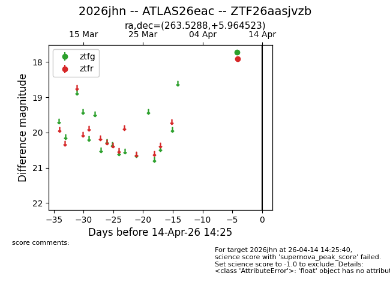
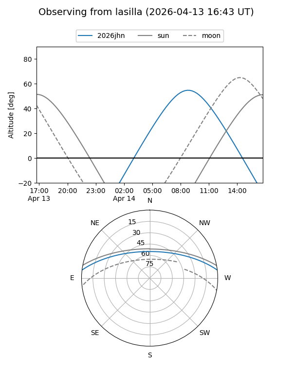
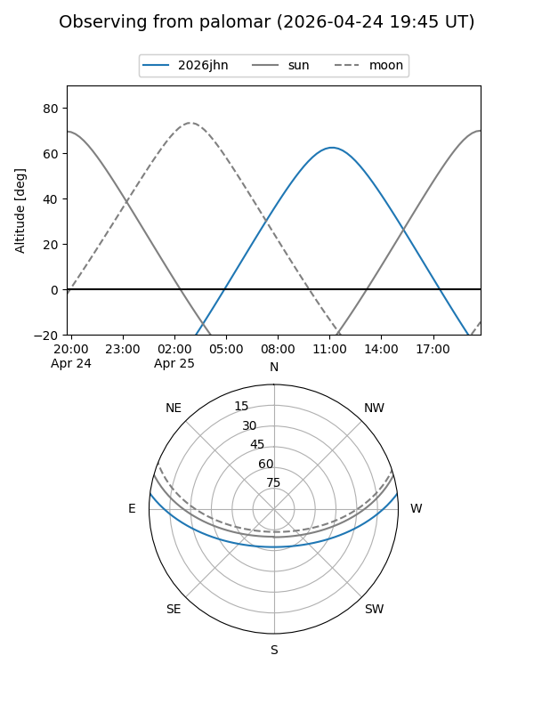
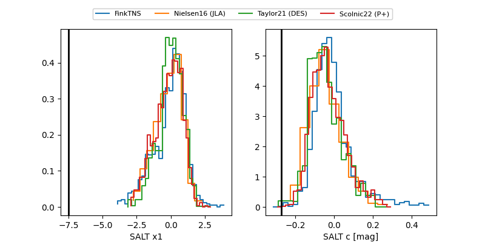

2026jhn
Target 2026jhn at 2026-04-14 14:36
Aliases and brokers:
FINK: link
Lasair: link
ALeRCE: link
TNS: link
YSE: link
alt names
ZTF26aasjvzb (ztf,fink_ztf)
2026jhn (tns,yse)
ATLAS26eac (atlas)
Coordinates:
equatorial (ra, dec) = 263.5288,+5.96452
equatorial (HMS+DMS) = 17:34:06.91,+05:57:52.28
galactic (l, b) = (29.4174,+19.90072)
Flags:
Photometry:
last ztfg=17.72, ztfr=17.91
1 ztfg, 1 ztfr detections
Lightcurve

Visibility


Additional plots
